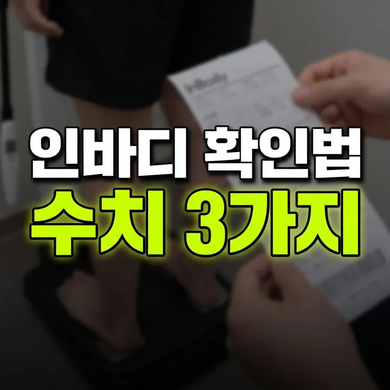

인바디 검사 결과표에서 가장 먼저 확인해야 할 핵심 수치 3가지
인바디 결과표에서는 먼저 근육·지방 막대그래프의 모양(C·I·D형), 내장지방 레벨, 세포외수분비 세 가지를 확인하세요. 수치는 검사 직전 조건에 따라 달라지므로 같은 조건에서 변화를 비교하는 것이 좋습니다.

헬스장이나 보건소에서 체성분 검사를 받고 나면, 복잡한 그래픽과 수많은 숫자가 적힌 결과지를 전달받게 된다. 대부분의 사람들은 맨 위에 적힌 '골격근량'과 '체지방량' 그래프의 길이만 대충 훑어보고 "근육이 부족하네, 살을 빼야겠네" 정도로 결론을 내린 뒤 종이를 서랍 속에 넣어두곤 한다.
하지만 수많은 데이터 중에서도 내 몸의 건강 상태와 대사율, 그리고 앞으로의 다이어트 방향성을 가늠하는 '핵심 지표'는 따로 있다. 인바디 검사지를 볼 때 눈여겨보아야 할 핵심 수치 3가지와 이를 올바르게 읽는 방법을 정리해 본다.
골격근량-체지방량의 밸런스 (C-I-D 유형 분석)
검사지 상단의 골격근량과 체지방량 그래프 막대 끝을 선으로 연결했을 때 나타나는 모양은 내 체형의 대사적 특징을 한눈에 보여준다.
- C자형: 체중과 체지방량 막대는 길고 골격근량 막대는 짧아 C자 모양을 그리는 형태다. 체지방 비율이 높아 대사율이 떨어지기 쉬우며, 근력 강화와 체지방 감량이 동시에 필요한 전형적인 개선 대상이다.
- I자형: 세 항목의 막대 길이가 거의 비슷한 일자 형태다. 표준적인 체형이지만, 근육량을 조금 더 보충하면 훨씬 더 건강한 대사 상태를 만들 수 있다.
- D자형: 골격근량 막대가 체중과 체지방량보다 길게 튀어나온 D자 모양이다. 기초대사량이 높은 편인 이상적인 상태로, 현재의 식단과 운동 루틴을 유지하는 것이 목표가 된다.
골격근량 대비 '복부지방률(WHR)'과 '내장지방 레벨'
체중계 수치가 정상 범위에 있더라도 방심해서는 안 되는 이유가 바로 내장지방이다. 겉으로 보기에는 마른 체형이지만 인바디 검사에서 내장지방 레벨이 높게 나오는 경우가 있다.
피하지방은 피부 바로 밑에 쌓여 체온 유지에 도움을 주지만, 장기 사이에 끼어 있는 내장지방은 혈액으로 직접 지방산을 분비하여 만성 염증과 인슐린 저항성을 유발할 수 있다. 따라서 단순 체지방률보다 내장지방 레벨이 10단위 이상으로 높지 않은지, 복부지방률이 표준 범위 내에 있는지를 우선적으로 점검해야 한다. 내장지방이 높다면 단순 칼로리 제한보다 정제 탄수화물을 줄이고 유산소 운동을 늘리는 것이 도움이 될 수 있다.
부위별 근육 발달과 '세포외수분비(ECW/TBW)'
마지막으로 체크해야 할 수치는 체수분 균형을 보여주는 세포외수분비(ECW Ratio)다. 전체 체수분 중에서 세포 바깥쪽에 있는 수분의 비율을 의미하는데, 정상 범위는 보통 0.36~0.39 수준이다.
이 수치가 상승해 0.40 이상으로 올라가면 체내에 부종이 있거나 근육의 질이 떨어져 염증 반응이 생겼을 가능성을 시사한다. 과도한 스트레스, 수면 부족, 무리한 다이어트로 인한 대사 불균형이 발생했을 때 이 수치가 높아질 수 있다. 인바디를 잴 때 수분 비율이 과도하게 높게 나온다면, 운동 강도를 높이기보다는 수면과 영양 섭취를 통해 신체 회복에 집중하는 것이 우선이다. 수치가 계속 높게 나온다면 검사 결과를 가지고 의료진과 상담하는 것이 좋다.
주의사항 및 한계
인바디(BIA) 검사는 체내에 미세한 전류를 흘려보내 전기 저항값으로 체성분을 추정하는 방식이다. 따라서 검사 직전의 수분 섭취량, 식사 여부, 공복 상태, 땀 배출 정도, 여성의 월경 주기 등에 따라 수치가 크게 변동될 수 있다. 오차를 줄이기 위해서는 가급적 아침 공복, 화장실을 다녀온 후, 운동을 하기 전의 동일한 조건에서 주기적으로 측정하여 절대적인 수치보다는 '변화의 추세'를 관찰하는 것이 바람직하다.
인바디 결과지는 수치 하나에 일희일비하기보다, 같은 조건에서 변화를 비교하며 읽는 것이 가장 정확하다는 점을 기억해 두자.
· 인바디 결과지는 막대그래프의 모양(C, I, D형)을 통해 현재 내 몸의 근육·지방 밸런스를 먼저 파악해야 한다.
· 마른 체형이라도 대사 질환 위험을 높일 수 있는 내장지방 레벨과 복부지방률 수치를 점검해야 한다.
· 세포외수분비 수치는 신체의 부종과 피로 상태를 가늠하는 참고 지표이며, 높게 나오면 무리한 운동보다 회복을 먼저 챙기는 것이 좋다.
이 글의 설명은 2026년 10월 기준 일반적인 건강 정보입니다. 몸 상태와 질환에 따라 달라질 수 있으니 참고용으로만 읽고, 몸이 걱정되면 의료진과 상담하세요. 진단은 의사의 영역입니다.
🔮 다음 글 예고
다음 글에서는 다이어트 중 단백질 섭취량을 계산할 때 흔히 저지르는 3가지 실수를 다룹니다.